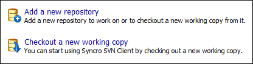

Assistant Actions When there is no repository configured, the Repositories view mode lists the following two actions: Figure 1. Repositories View Actions  Parent topic: Repositories ViewPrevious topic: Repositories View Contextual Menu ActionsNext topic: Drag and Drop Operations